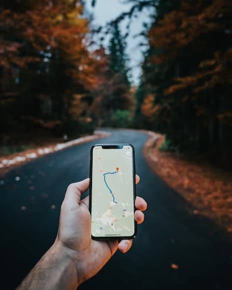

03117, Україна, Київ, Пр. Перемоги, 65.
Служба клієнтських сервисів в Києві: м. Київ, вул. В.Хвойки, 21, прохідна 3, оф. 133
(093) 654 77 77, (095) 654 77 77, (097) 654 77 77.
(044) 454 27 50 Служба клієнтських сервисів в Києві: (044) 586 54 25
Паблік екаунт у вайбері - СГ ТАС: виклик лікаря додому, передача медичної документації, завантаження документів в справу, перевірка статусу справи та виплати, відгуки по роботі асистанса
9:00 - 18:00

ПРИВАТНЕ АКЦІОНЕРНЕ ТОВАРИСТВО "СТРАХОВА ГРУПА "ТАС"
Скорочена назва юридичної особи
АТ "СГ "ТАС" (ПРИВАТНЕ)
Код ЄДРПОУ
30115243
Юридична адреса
03062, м.Київ, Святошинський район, ПРОСПЕКТ ПЕРЕМОГИ, будинок 65
Контакти
5360020 ; 5360021
Уповноважена особа
ЦАРУК ПАВЛО ВІКТОРОВИЧ - керівник